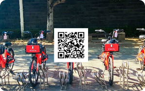
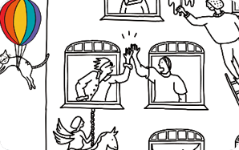

-

5번째 뉴스레터 우리 일상에서 이동은 어떤 모습인가요? 우리 일상에서 이동은 어떤 모습인가요? 걷거나, 뛰거나, 타거나. 제주시 원도심에 전기자전거가 나타났습니다. 제주 도민의 차량 의존을 낮추면서 교통혼잡과 주차 문제 해결을 모색하고, 대체이동 수단을 마련하기 위한 대안이동 실험 중입니다.
-

4번째 뉴스레터 지금 막 시도하려는 사람들에게 보통 ‘시도’라고 하면, 시작과는 또 다른 무게감을 느끼는 경우가 많습니다. ‘어떤 것을 이루어 보려고 계획하거나 행동함’이란 사전 적 정의를 볼 때, 행동해야 한다는 점이 그렇습니다. 하지만 되짚어보면 그 어떤 크고 작음의 부피를 담진 않지요. 뭔가 거창한 것 을 벌이는 것만이 시도가 아닌 셈입니다.
-
3번째 뉴스레터 우리 일상에서 이동은 어떤 모습인가요? 우리 일상에서 이동은 어떤 모습인가요? 걷거나, 뛰거나, 타거나. 제주시 원도심에 전기자전거가 나타났습니다. 제주 도민의 차량 의존을 낮추면서 교통혼잡과 주차 문제 해결을 모색하고, 대체이동 수단을 마련하기 위한 대안이동 실험 중입니다.
-
2번째 뉴스레터 지금 막 시도하려는 사람들에게 보통 ‘시도’라고 하면, 시작과는 또 다른 무게감을 느끼는 경우가 많습니다. ‘어떤 것을 이루어 보려고 계획하거나 행동함’이란 사전 적 정의를 볼 때, 행동해야 한다는 점이 그렇습니다. 하지만 되짚어보면 그 어떤 크고 작음의 부피를 담진 않지요. 뭔가 거창한 것 을 벌이는 것만이 시도가 아닌 셈입니다.
-
1번째 뉴스레터 지금 막 시도하려는 사람들에게 보통 ‘시도’라고 하면, 시작과는 또 다른 무게감을 느끼는 경우가 많습니다. ‘어떤 것을 이루어 보려고 계획하거나 행동함’이란 사전 적 정의를 볼 때, 행동해야 한다는 점이 그렇습니다. 하지만 되짚어보면 그 어떤 크고 작음의 부피를 담진 않지요. 뭔가 거창한 것 을 벌이는 것만이 시도가 아닌 셈입니다.